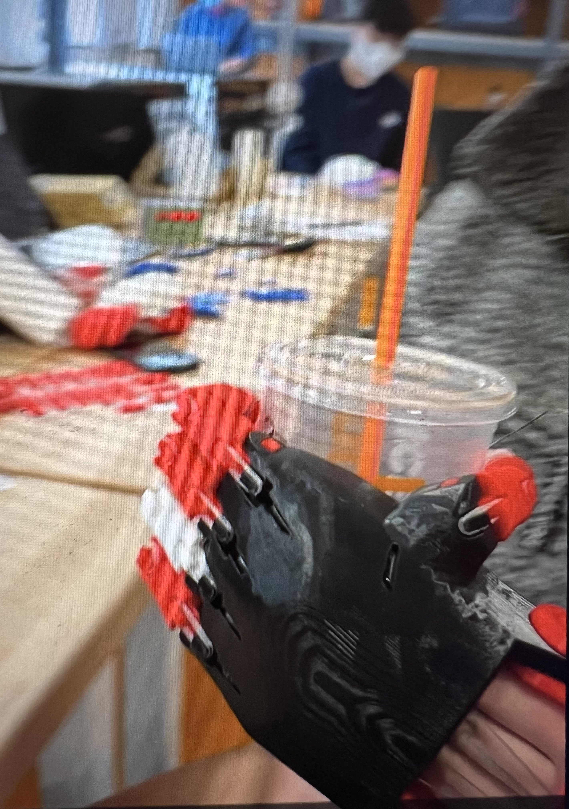
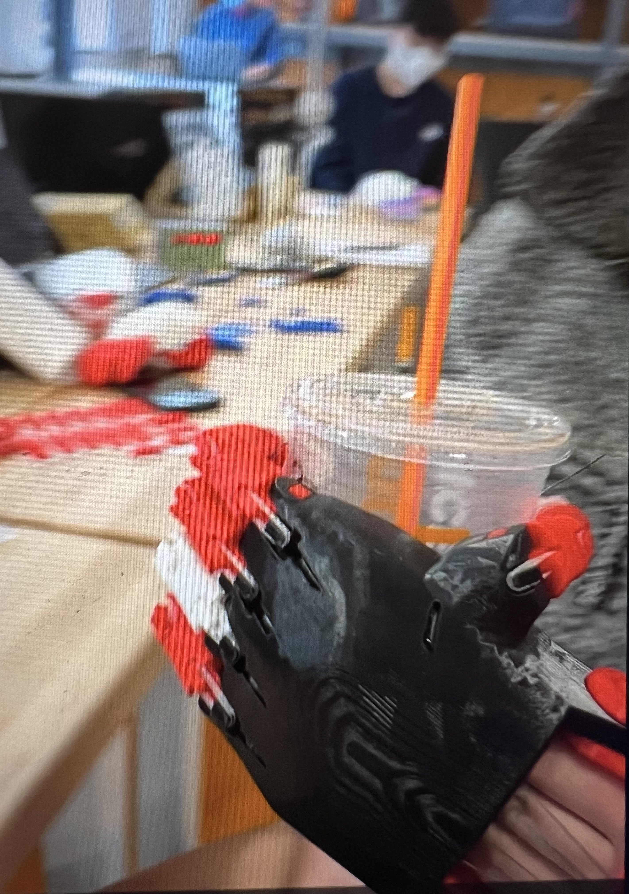

What is e-NABLE?
During my sophomore year of college, I decided to meet with my school’s very own MakerLab professor and innovator to discuss my desire to get involved in engineering and prosthesis. He introduced me to the open source non-profit organization, e-NABLE. This organization is meant to provide anyone with a 3D printer with the tools necessary, such as designs, materials and instructions, to build 3D printed upper limb prosthetics for children with limb differences. There are many different designs on this platform open to the public so anyone with access to a 3D printer can build a limb for someone in need. One cool thing about these hands is that since kids are constantly growing, they can learn how to use these more simple prosthetics that are not super high-tech or “expensive”, making them more affordable and available to the public. Immediately I was drawn to this organization, because this is my career goal, designing prosthesis for children with limb differences! So it’s no surprise that this project has been my favorite so far. I'm so grateful to become a part of this “global network of humanitarian makers”.


Slicing and Printing
When getting ready to slice the STL file and print our pieces, I quickly realized that the Prusa 3D printer does not have a build plate large enough for it all in one print. So I switched to the Raise 3D printer. The file came with pieces for both a right hand and a left hand with two sets for each hand. First I had to go back and delete pieces until I was left with only one set for the left hand. After deleting a few pieces, I would hit the “arrange” function to try to consolidate my slice. I easily fit the pieces together at 100%, but once I scaled it to 150% I had to re-arrange. I tried to fit the arm guard in between the holes of the palm and the gauntlet below. But overall, this led to errors of print off the board. Eventually, I decided to use the Prusa slicer to just print the palm. The cool thing about the Raise 3D printer is that it has two extruders. I’m sure if I had set some pieces to the left extruder and some pieces to the right extruder, that I could have printed it all in half of the time. However, I was in a rush when printing so I used what settings I originally had set on my slice, printing all the pieces with one extruder. The palm alone on the Prusa took a total of 9 hours with no supports. The Raise took about 19 hours. When I go to print another e-NABLE hand, I will try using both extruders and see if this maximizes my time. Both the pieces from the Prusa and Raise came out great, there was slight stringing on the palm from the Prusa, but overall both were quality prints.

.png)


Instructions and Assembly
Although this project seems complex, when looking at the fit and tools, the assembly seems fairly intuitive. I can see which joints are bigger, belonging to the thumb, and which pins are smaller for the upper finger joints. However, the instructions were helpful for the fine details, such as the long pin going through both the index and middle fingers at the palm, and how to string the hand to make it work. I used two resources, a video from the 3DUniverse, and a PDF from the e-NABLE hub. I’m a very visual learner so both of these resources were good. However, the PDF lacked commentary explaining how we went from one step to the next, making it a bit more difficult to understand. For example, I did not understand how to place tensioner pins and screws in the tensioner until I watched the video. The video showed me what position to put in the pins and how to not fully screw them in so that we could first wrap the string around them before tightening. For me, the hardest part of assembly was fitting some of the pins in each joint, and the wrist pins through both the arm guard, palm and wrist pin caps, as some of the 3D printing decreased the tolerance in certain places. Some people even had to file down some pins in order to fit them through the joints. This took a bit of maneuvering and force, but the pieces are fairly thick, so not too fragile. The PDF also did not show how to measure the strings. Some people started cutting pieces for each finger, but actually, the video showed you would need one string for two fingers. Therefore, you had to measure the length from the tip of the finger, down to the tensioner, and back up to the finger tip. I think the video was the most useful, however the PDF could be more helpful if it included written instructions to go along with the diagrams. I do think the advantage of the PDF is the images of labeled parts. I found it helpful to have the labeled parts open in one tab while watching the video in the other. It could be helpful to combine these resources into one folder on the e-NABLE hub.
 

Modified Design and Reflection
After printing and assembling my first e-NABLE hand, we were asked to go back and re-design something innovative about the hand to serve a different everyday function. My original idea was to add a fork to the index finger for easier eating without holding utensils. I used Fusion360 to do this, however it would not let me adjust the mesh because there were so many triangular faces. So I used meshmixer’s reduce function to reduce the number of triangles on the distals (fingers), then re-imported the design into Fusion. Then I used the modify option under the Mesh tab and converted the mesh to solid. At first I tried using the spline to create a somewhat rounded face around the curve of the fingertip, but the triangles were all at different angles, making it impossible to fit it all on one construction plane. Then I tried constructing an axis running from the base of the finger, up through the tip. Which I learned would not work because I needed a flat perpendicular base to build up around then rotate around the axis. My final effort was to put a sketch plane on one of the top, centered, triangular faces on the tip of the finger. Then I built a rectangle from the tip and extruded up to make a small stock of the utensil attached to the finger. I decided to change my idea from a fork to a spoon because I wasn’t sure how to make symmetrical cone-like structures. So, I created an oval using a spline at the same height as the extruded rectangle. Next I created a smaller oval on an offset plane -20mm from the original oval and used the loft function to create a spoon shape. Finally, I went back to the top spoon face, created another offset and extruded down, but only -15mm down so as not to create a hole in the bottom of the spoon. This design was quite confusing trying to figure out where and how to build with the mesh, but once I found the right starting point to use, I was able to create the spoon structure pretty easily. I really enjoyed the process of this entire project because it felt like a giant puzzle, putting pieces together that fit. The end result was also amazing. I actually tried using the prosthetic on my left hand, I was able to pick up smaller and lighter things like my phone and a coffee cup. In order to pick up heavier things, I would need to extend the arm guard further down my arm to create greater force with the bend of my wrist. I want to keep working on innovative designs, and see how they actually work as 3D objects on a limb. For example, I think if I were to print out my modification, the spoon would be much smaller than how I actually envision it, probably making it nonfunctional for eating things such as cereal or ice cream. This project has made me very excited to work with actual clients to build prosthetics for their needs!